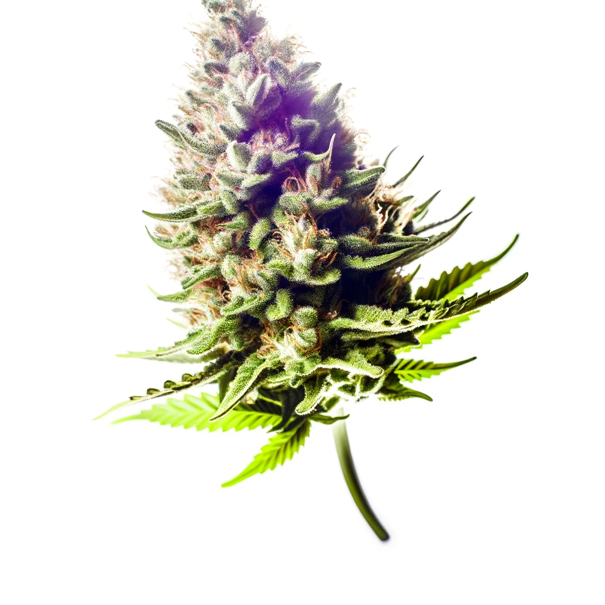

<section class="bg-white dark:bg-gray-900">
  <div class="gap-16 items-center py-8 px-4 mx-auto max-w-screen-xl lg:grid lg:grid-cols-2 lg:py-16 lg:px-6">
      <div class="font-light text-gray-500 sm:text-lg dark:text-gray-400">
          <h2 id="uns" class="mb-4 text-4xl tracking-tight font-extrabold text-gray-900 dark:text-white">Wir leben Nachhaltigkeit</h2>
          <p class="mb-4">Willkommen im Herzen der Nachhaltigkeit und Gemeinschaft – willkommen beim <i>420freiburg</i> Cannabis Social Club. In einer Zeit, in der Nachhaltigkeit nicht nur ein Trend, sondern eine Notwendigkeit ist, setzen wir neue Maßstäbe im verantwortungsvollen und umweltbewussten Umgang mit Cannabis. Unser Club ist mehr als nur ein Ort des Austauschs; er ist eine Bewegung, die sich für die Aufklärung, den verantwortungsvollen Konsum und die umweltfreundliche Produktion von Cannabis einsetzt. Bei uns vereinen sich Gleichgesinnte, die nicht nur Wert auf die Qualität und Herkunft ihrer Pflanzen legen, sondern auch darauf, wie sie angebaut werden. Tritt ein in eine Gemeinschaft, die zeigt, wie moderner Cannabis-Anbau im Einklang mit der Natur und gesellschaftlichen Werten möglich ist.</p>
      </div>
      <div class="grid grid-cols-2 gap-4 mt-8">
          
          
      </div>
  </div>
</section>
